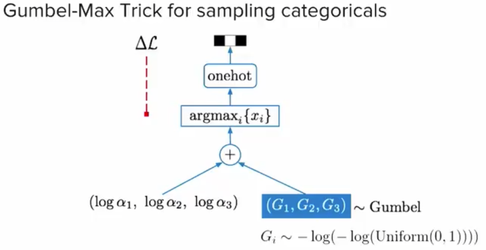

The Gumbel soft-max
Gumbel trick有两个用途，一个用途是是用来对离散分布进行采样，这是一种重参数化的技巧，另外一个用途是用于估计normalizing partition function，也就是分布的归一化项。下面是一个离散分布采样的例子： 
如上图例子，首先有\(\log \alpha_1\) 然后加上一个gumbel noise G1，最后取最大值，就是我们要的样本。这个过程可以形式化为，设X是离散随机分布\(P(X=k)\propto \alpha_k\) , 设\(\{G_k\}_{k\le K}\)是独立同分布的Gumbel 分布的随机变量。于是： \[ X=\arg\max_k(\log(\alpha_k)+G_k) \]
为了让这个argmax可求导，于是就把中间的argmax换成softmax。我们从这个图底下的“+”号可以看到，这是一种重参数的方法，通过加一个随机的，固定分布的噪声，从而实现采样。这个噪声的采样方法可以通过Inverse transform sampling方法直接从均匀分布进行采样，即 \[ G_i\sim -log(-log(\text{Uniform}(0,1))) \]
目前一篇论文“Categorical Reparametrization with Gumbel-Softmax”正是用了这个方法去对离散的隐状态进行采样，从而使得里面的参数可导。
Gumbel distribution
要想知道他为什么有这样的效果，我们需要先介绍一下gumbel distribution
这一个分布，可以把看作是一个关于“最大值”的概率的分布，比如你想预测明年河流最大的水位是多少，那么你就可以用gumbel分布去预测，这个分布会告诉你每一个值作为“最大值“的概率是多少。一个很简单的推广，如果你对这个分布取个负号的话，你就可以去预测最小值。 
他的概率密度函数： \[ f(x) = {\frac {1}{\beta }}e^{-(z+e^{-z})} \] 其中\(z=\frac{x-\mu}{\beta}\)
他的分布函数： \[ F(x)= e^{-e^{-(x-\mu )/\beta }} \] 均值：\(E(X)=\mu+c\beta\),方差：$ {}^{2}\(,其中\)c$是一个常数( Euler–Mascheroni constant )
Gumbel trick
我们先考虑一下，求解normalizing partition function. 就是分布的归一化项的问题。
定义一个非标准化的mass function \(\tilde{p} : \mathcal{X} \to [0, \infty)\) 这个分布是没有标准化的，也就是他加起来不等于1.而它的标准化项normalizing partition function为\(Z:= \sum_{x \in \mathcal{X}} \tilde{p}(x)\),接来下我们定义\(\phi(x)=\ln \tilde{p}(x)\) 对其概率密度取对数。
于是可以证明： \[ \max_{x \in \mathcal{X}} \{ \phi(x) + \gamma(x) \} \sim \text{Gumbel}(-c + \ln Z) \] 其中\(\gamma \sim \text{Gumbel}(-c)\)。这就意味，只要我们从\(\max_{x \in \mathcal{X}} \{ \phi(x) + \gamma(x) \}\)中采集足够多的样本，我们就能够知道Z的取值(通过求期望得到)。
具体的推导过程如下： 令\(T=\max_{x\in \mathcal{X}} \{\phi (x)+\gamma (x)\}\)，于是他的概率分布等于 \[ \begin{aligned} P(T< t) & =P(\max_{x\in \mathcal{X}} \{\phi (x)+\gamma (x)\}< t)\\ & =\prod _{x\in \mathcal{X}} P(\phi (x)+\gamma (x)< t)( 最大值小于t等价于每一项都小于t)\\ & =\prod _{x\in \mathcal{X}} P(\gamma (x)< t-\phi (x))\\ & =\prod _{x\in \mathcal{X}} F_{Gumbel} (t-\phi (x))\\ & =\exp\left( -\sum _{x\in \mathcal{X}}\exp( -(t-\phi (x)+c))\right)\\ & =\exp( -Z\exp( -(t+c)))\\ & =\exp( -\exp( -(t+c-\ln Z)))\\ & \Rightarrow F(t)\text{ where } t\sim \text{Gumbel} (-c+\ln Z) \end{aligned} \] 我们发现这个max的函数，最后是服从\(\text{Gumbel} (-c+\ln Z)\)分布的，也就是说，我们只要求这个分布的期望：\(E=-c+\ln Z+c=\ln Z\)就可以把\(\ln Z\)还原出来！这个例子也从侧面说明了Gumbel分布用于表示最大值的概率分布的优势所在。
如果我们的p是已经标准化的p，那么Z=0，于是，这个分布只与\(\gamma(x)\)有关。实际上，当\(\gamma \sim Gumbel(0,1)\)，而p是多项式分布的时候就是我们模拟多项式分布进行采样时所服从的分布！那么为什么这个Gumbel 分布能够模拟多项式分布？
我们来考虑一个问题，对于公式1，多项式一共有K个类别。那么第k个类别恰好是最大的概率是多少？
令\(\displaystyle z_{k} =\log \alpha _{k} +G_{k}\)要求解这个问题，我们要先求出\(z_k\)是最大的概率多少？然后再对z积分，从而求出第k个是最大的概率。 \[ \begin{aligned} \Pr (\log \alpha _{k} +G_{k} >\max_{i\neq k}\log \alpha _{i} +G_{i} ) & =\Pr (\max_{i\neq k}\log \alpha _{i} +G_{i} < \log \alpha _{k} +G_{k} )\\ & =\prod _{i\neq k}\Pr (\log \alpha _{i} +G_{i} < \log \alpha _{k} +G_{k} )\\ & =\prod _{i\neq k}\Pr (G_{i} < \log \alpha _{k} +G_{k} -\log \alpha _{i} )\\ & =\prod _{i\neq k} F(\log \alpha _{k} +G_{k} -\log \alpha _{i})\\ & =\prod _{i\neq k}\exp\{-\exp\{-(\log \alpha _{k} +G_{k} -\log \alpha _{i})\}\} \end{aligned} \]
现在我们有了\(\displaystyle z_{k}\)是最大的那个概率值，现在我们想知道第k个元素是最大的概率值是多少，因此，我们需要对所有z的取值进行积分，从而得到第k个位置取值最大的概率。 \[ \begin{aligned} \Pr (\text{k is largest} \ |\ \{x_{k'} \}) & =\int \exp \{-(z_{k} -\log \alpha _{k} )-\exp \{-(z_{k} -\log \alpha _{k} )\}\} \prod _{i\neq k}\exp \{-\exp \{-(z_{k} -\log \alpha _{i} )\}\}\ \mathrm{d} z_{k}\\ & =\int \exp \{-z_{k} +\log \alpha _{k} -\exp \{-z_{k} \}\sum ^{K}_{i=1}\exp \{\log \alpha _{i} \}\}\ \mathrm{d} z_{k}\\ & =\frac{\exp \{\log \alpha _{k} \}}{\sum ^{K}_{i=1}\exp \{\log \alpha _{i} \}} \end{aligned} \]
这时候，奇迹来了，上面这条等式恰好是一个softmax的公式，也就是说，第k个位置最大的概率，恰好就是对离散概率分布的一个近似。而且一个有趣的性质是这里的\(\alpha_k\)是不需要归一化的，因为经过softmax之后他就自动归一化了！
参考资料
http://irenechen.net/blog/2017/08/17/gumbel-trick.html https://www.youtube.com/watch?v=wVkLM2KKHp8 https://hips.seas.harvard.edu/blog/2013/04/06/the-gumbel-max-trick-for-discrete-distributions/